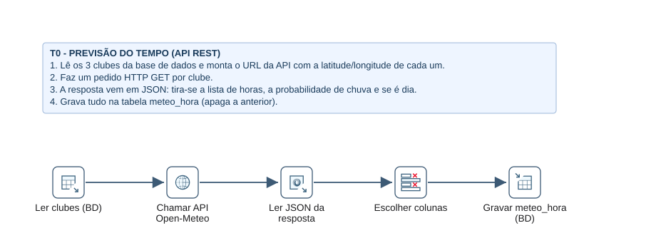
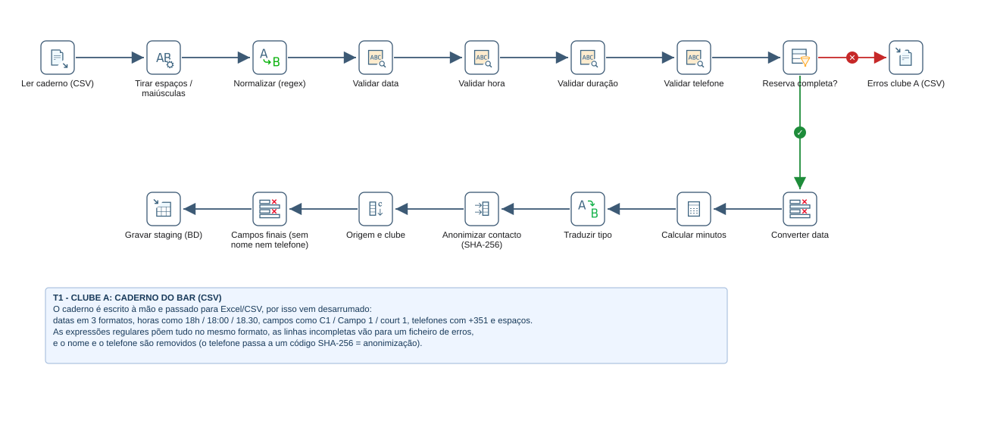
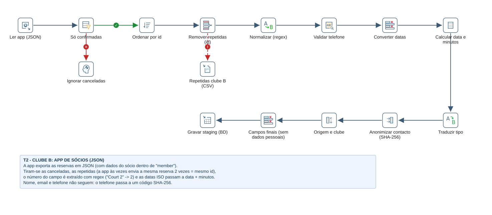
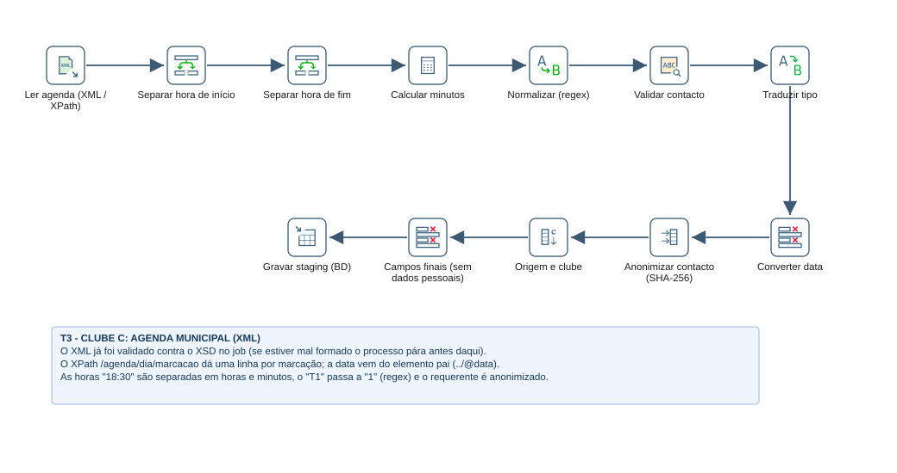
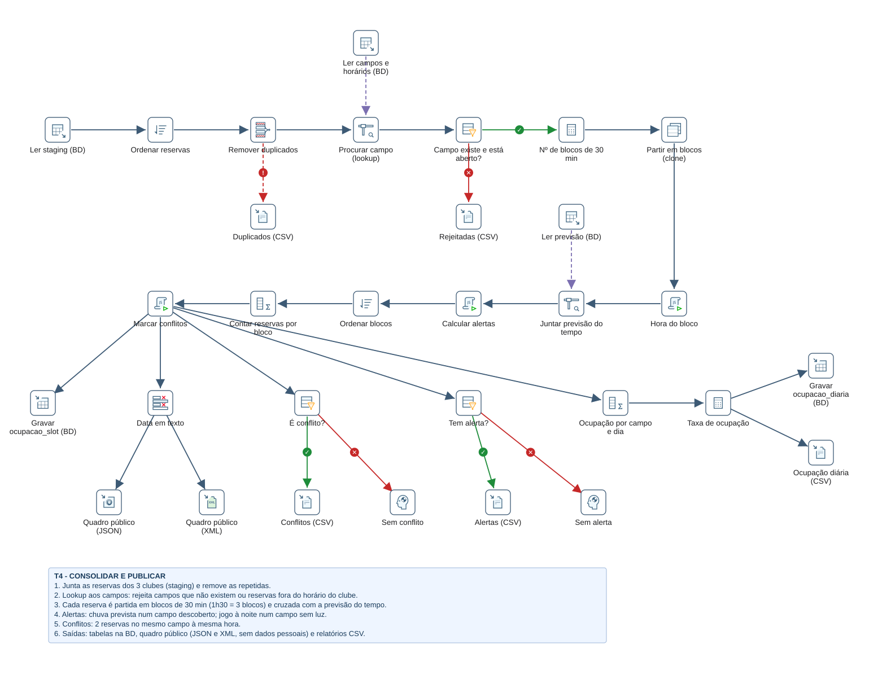
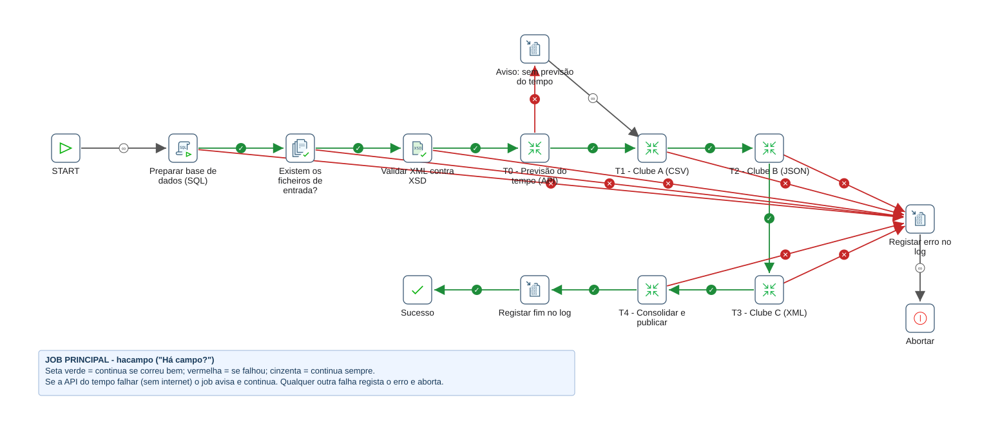
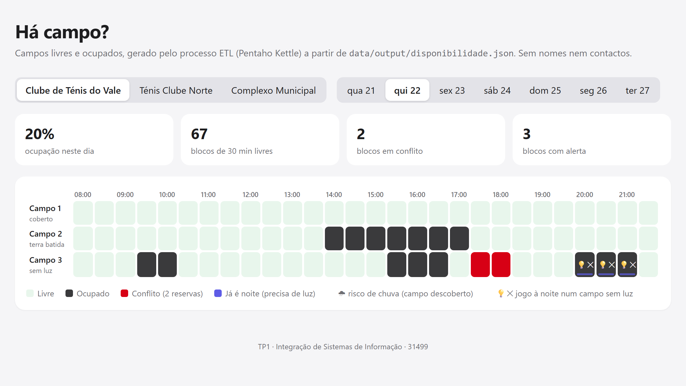

| Unidade curricular | Integração de Sistemas de Informação (ISI) – 2026/27 |
| Trabalho | Trabalho Prático I – processos ETL |
| Aluno | Alexandre Magalhães Martins Machado – n.º 31499 (trabalho individual) |
| Docentes | Luís Ferreira e Óscar Ribeiro |
| Data | 22 de outubro de 2026 |
Anexo A – Declaração de utilização de inteligência artificial
| Equipa | Alexandre Magalhães Martins Machado (31499), trabalho individual |
|---|---|
| Unidade curricular | Integração de Sistemas de Informação, 3.º ano, 1.º semestre, 2026/27 |
| Curso | Licenciatura em Engenharia de Sistemas Informáticos, regime pós-laboral, IPCA |
| Plataformas | Pentaho Data Integration (Kettle) 10.2, PostgreSQL 17, API REST Open-Meteo; página HTML/JavaScript para mostrar o resultado |
O enunciado pede um processo ETL (Extract, Transform, Load) completo, com dados de várias origens e formatos, transformações de limpeza e de negócio e vários destinos. O tema vem de um projeto pessoal, o hacampo ("Há campo?"): um quadro público que mostra, a qualquer jogador, que campos de ténis estão livres ou ocupados num clube, sem ter de telefonar.
Em muitos clubes de ténis não se consegue ver online se há campos livres. As marcações estão espalhadas por sistemas que não falam entre si: num clube são escritas num caderno no bar e passadas para Excel; noutro há uma aplicação só para sócios; num complexo municipal estão na agenda da câmara. Quem quer jogar tem de ligar para cada um.
O objetivo do trabalho é integrar as marcações de três clubes num único quadro de disponibilidade. Para isso é preciso resolver problemas típicos de integração ao nível dos dados:
| Problema | Exemplo nos dados |
|---|---|
| Formatos diferentes | CSV com ;, JSON com objetos aninhados, XML com atributos e validação por XSD |
| O mesmo valor escrito de várias formas | datas 21/10/2026, 2026-10-21, 21-10-26; horas 18h, 18:00, 18.30, 18H; campos C1, Campo 1, court 1; telefones +351 912…, 00351912… |
| Dados incompletos ou inválidos | reserva sem hora, data sem ano, campo que não existe, reserva depois do fecho do clube |
| Registos repetidos | linha escrita duas vezes no caderno; a app envia a mesma reserva duas vezes (mesmo id); reservas canceladas |
| Dados pessoais | nomes, telefones e emails não podem aparecer num quadro público (RGPD) |
| Informação de outros sistemas | se vai chover num campo descoberto e se já é de noite num campo sem iluminação |
| Conflitos de negócio | duas reservas no mesmo campo à mesma hora |
Os clubes e as reservas são fictícios (gerados com erros de propósito, para haver o que limpar). A previsão do tempo é real e vem da API Open-Meteo.
O processo foi dividido em cinco transformações, orquestradas por um job. As três transformações de entrada (T1, T2, T3) tratam cada uma um formato e escrevem todas para a mesma tabela intermédia (staging), já no mesmo formato. A T4 trabalha só sobre essa tabela, por isso não precisa de saber de onde veio cada reserva. Para juntar um quarto clube basta acrescentar uma transformação de entrada.
| Origem | Natureza | Formato | Step do Kettle |
|---|---|---|---|
clube_a_caderno.csv | ficheiro local | CSV (;) | CSV file input |
clube_b_app.json | ficheiro local | JSON aninhado | JSON input (JSONPath) |
clube_c_agenda.xml + .xsd | ficheiro local | XML | XSD validator (job) + Get data from XML (XPath) |
tabelas clubes e campos | base de dados relacional | PostgreSQL | Table input |
| api.open-meteo.com | serviço web remoto | JSON | HTTP client + JSON input |
| Critério do enunciado | Onde está no trabalho |
|---|---|
| Expressões regulares | Replace in string (normalizar datas, horas, campos e telefones) e Regex evaluation (validar e extrair grupos) em T1, T2 e T3 |
| Nulos e validação | Filter rows com IS NOT NULL e resultados das regex; linhas inválidas enviadas para ficheiros de erro |
| Duplicados | Sort rows + Unique rows com redirecionamento dos repetidos (T2 e T4) |
| Anonimização | Add a checksum SHA-256 do telefone; Select values remove nome, email e telefone |
| Conversão de formatos | CSV/JSON/XML → tabela; tabela → JSON e XML; datas texto ↔ data |
| Joins e lookups | Stream lookup aos campos/horários e à previsão do tempo |
| Agregações e cálculos | Calculator (minutos, duração, nº de blocos, taxa), Group by (reservas por bloco, ocupação por dia) |
| Reestruturação | Split fields, Value mapper, Clone row (1 reserva → n blocos), String operations, Constant, Modified JavaScript value |
| Orquestração, logs e acesso remoto | job com tratamento de erros, verificação de ficheiros, validação XSD, SQL, parâmetros, Write to log e log em ficheiro; chamada à API REST |
PostgreSQL (esquema hacampo, tabelas stg_reservas, meteo_hora, ocupacao_slot e ocupacao_diaria), o quadro público disponibilidade.json e disponibilidade.xml, sete relatórios CSV e o log de execução. A página src/quadro/index.html lê o JSON e desenha o quadro livre/ocupado (Figura 8).
clubes (codigo PK, nome, cidade, latitude, longitude, abertura, fecho, origem)
campos (clube FK, campo, piso, coberto, iluminacao) PK (clube, campo)
stg_reservas (origem, clube, campo, data, inicio_min, fim_min, tipo, cliente_hash, contacto_valido)
meteo_hora (clube, data_hora, prob_chuva, e_dia) PK (clube, data_hora)
ocupacao_slot (clube, campo, data, hora, nr_reservas, conflito, coberto,
prob_chuva, risco_chuva, precisa_luz, sem_luz) PK (clube, campo, data, hora)
ocupacao_diaria (clube, campo, data, slots_ocupados, slots_totais, taxa_ocupacao)
As horas são guardadas em minutos desde a meia-noite (18:30 → 1110). Assim, verificar sobreposições, durações e horários de abertura passa a ser aritmética simples.

t0_meteo_api.ktr.Lê os três clubes da base de dados e monta, em SQL, o URL da API com a latitude e a longitude de cada um e com os parâmetros ${DATA_INICIO} e ${DATA_FIM} (substituição de variáveis ativa). O HTTP client faz um pedido GET por clube. A resposta é JSON com listas paralelas (hourly.time, hourly.precipitation_probability, hourly.is_day), que o JSON input lê a partir do campo da resposta e transforma em linhas: 3 pedidos dão 504 linhas (3 clubes × 7 dias × 24 horas). O resultado substitui a tabela meteo_hora.

t1_clube_a_csv.ktr.É a origem mais desarrumada. Primeiro, o String operations tira espaços, põe a hora e o tipo em maiúsculas e o nome com iniciais maiúsculas. Depois, o Replace in string aplica as expressões regulares:
| Campo | Expressão regular | Substituição | Exemplo |
|---|---|---|---|
| data | ^(\d{2})/(\d{2})/(\d{4})$ | $3-$2-$1 | 21/10/2026 → 2026-10-21 |
| data | ^(\d{2})-(\d{2})-(\d{2})$ | 20$3-$2-$1 | 21-10-26 → 2026-10-21 |
| hora | ^(\d{1,2})[H:.]?$ | $1:00 | 18H → 18:00 |
| hora | ^(\d{1,2})[H:.](\d{2})$ | $1:$2 | 18h30, 18.30 → 18:30 |
| campo | \D | (nada) | Campo 2, C2, court 2 → 2 |
| telefone | \D e depois ^(00351|351)(\d{9})$ | $2 | +351 912 345 678 → 912345678 |
A seguir, quatro passos Regex evaluation validam os valores normalizados. Os grupos de captura extraem logo os números de que o cálculo precisa:
^\d{4}-\d{2}-\d{2}$^(\d{1,2}):(\d{2})$ → h_ini, m_ini^(?:(\d+)\s*h)?\s*(?:(\d+)\s*(?:min|m)?)?$, que aceita 1h, 1h30, 90min, 60 → dur_h, dur_m^(9[1236]\d{7}|2\d{8})$O Filter rows envia as linhas incompletas para erros_clube_a.csv. As restantes seguem: a data passa a tipo Data, o Calculator calcula inicio_min = h × 60 + m e fim_min = inicio_min + duração (com NVL para as partes em falta), o Value mapper traduz S/P/A para singulares/pares/aula e o Add a checksum substitui o telefone por um código SHA-256. Esse código permite contar clientes e detetar duplicados sem guardar o número. O último Select values deixa só os campos da staging: o nome e o telefone ficam para trás.
Resultado: 48 linhas lidas, 2 com erro (uma sem hora e uma com a data sem ano), 46 gravadas na staging.

t2_clube_b_json.ktr.O JSON input usa caminhos JSONPath como $.reservas[*].member.phone para achatar o objeto aninhado do sócio. As reservas com status diferente de confirmed são descartadas. Depois de ordenar por id, o Unique rows deteta os registos que a app enviou duas vezes e redireciona-os, através de um hop de erro, para repetidas_clube_b.csv. As datas ISO (2026-10-21T18:00:00) são convertidas para Data e o Calculator extrai a data sem hora (REMOVE_TIME_FROM_DATE), a hora (HOUR_OF_DAY) e o minuto (MINUTE_OF_HOUR). Nome, email e telefone não passam para a staging.
Resultado: 51 reservas lidas, 7 canceladas, 2 repetidas, 42 gravadas.

t3_clube_c_xml.ktr.Antes desta transformação, o job valida o XML contra clube_c_agenda.xsd. O XSD obriga, por exemplo, a horas no formato HH:MM, a campos T1, T2… e a um tipo de marcação dentro de uma lista fechada; se o XML não cumprir, o processo para antes de ler dados errados. O Get data from XML percorre /agenda/dia/marcacao (uma linha por marcação) e vai buscar a data ao elemento pai com o XPath ../@data. As horas 18:30 são separadas com Split fields, o T1 passa a 1 com a regex ^T e o requerente é anonimizado.
Resultado: 32 marcações gravadas.

t4_consolidar_publicar.ktr.duplicados.csv.campos + clubes (coberto, iluminação, horário em minutos). O Filter rows compara campos entre si (inicio_min ≥ abertura_min, fim_min ≤ fecho_min) e rejeita campos inexistentes e reservas fora do horário para rejeitadas.csv.18:30) e a chave da meteorologia (2026-10-21T18:00).meteo_hora por clube e hora e calcula os alertas: risco_chuva (campo descoberto e probabilidade ≥ LIMITE_CHUVA), precisa_luz (já é noite) e sem_luz (é noite e o campo não tem iluminação).conflitos.csv.ocupacao_slot na BD, quadro em JSON e em XML, alertas, conflitos e, com um segundo Group by e um Calculator, a taxa de ocupação por campo e dia (BD e CSV).| Indicador (execução de 20/10/2026) | Valor |
|---|---|
| Reservas na staging (3 clubes) | 120 |
| Duplicados removidos / rejeitadas (campo 7, fora de horas) | 2 / 2 |
| Reservas válidas → blocos de 30 min | 116 → 316 |
| Blocos ocupados distintos / em conflito | 311 / 5 |
| Blocos com alerta (noite em campo sem luz) | 14 |
| Blocos com chuva ≥ 50% num campo descoberto | 0 (semana seca; com LIMITE_CHUVA=5 há 99) |
| Linhas de ocupação diária (campo × dia) | 60 |

j_hacampo.kjb.O job j_hacampo.kjb define a ordem e o que acontece quando algo falha:
ON CONFLICT … DO UPDATE) e esvazia a staging. Pode ser corrido várias vezes.O job tem três parâmetros, passados às transformações: DATA_INICIO e DATA_FIM (semana pedida à API) e LIMITE_CHUVA. Todos os caminhos são relativos (${Internal.Entry.Current.Directory}), por isso a pasta pode ser copiada para outro computador. Pela linha de comandos:
Kitchen.bat -file="...\dataintegration\j_hacampo.kjb" -level=Basic "-logfile=...\data\output\execucao.log"

src/quadro/index.html) a ler o disponibilidade.json: ocupado a cinzento, conflito a vermelho, noite em campo sem luz assinalada.O vídeo mostra o job a correr no Spoon, os dados de entrada com erros, os ficheiros de saída, as tabelas no PostgreSQL e o quadro final.
Link: {{VIDEO_URL}}
O trabalho mostra um processo ETL completo sobre um problema real: juntar num único quadro as marcações de clubes que usam sistemas diferentes. O processo lê cinco origens (CSV, JSON, XML, PostgreSQL e uma API REST). Limpa e normaliza os dados com expressões regulares, remove repetidos, anonimiza os dados pessoais e aplica regras de negócio: horários, campos existentes, conflitos, luz e chuva. Os resultados ficam na base de dados e em ficheiros JSON, XML e CSV. A separação em transformações de entrada, staging e consolidação torna fácil acrescentar novos clubes.
As principais dificuldades foram as datas e horas escritas de muitas formas diferentes, decidir o que é um erro (que vai para ficheiro) e o que é só um aviso (que continua), e manter a anonimização sem perder a capacidade de detetar duplicados (resolvida com o hash SHA-256).
Trabalhos futuros:
hourly, precipitation_probability, is_day). https://open-meteo.com/en/docsINSERT … ON CONFLICT, CREATE TABLE IF NOT EXISTS. https://www.postgresql.org/docs/17/xs:pattern, xs:enumeration). https://www.w3.org/TR/xmlschema-2/Foi utilizado um assistente de IA (modelo de linguagem) na análise do enunciado, no desenvolvimento do processo ETL e na redação do relatório, a partir de pedidos de escolha do tema, planeamento e execução do trabalho e organização da entrega.